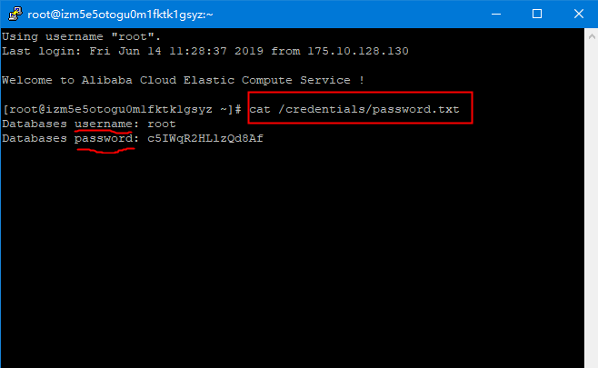
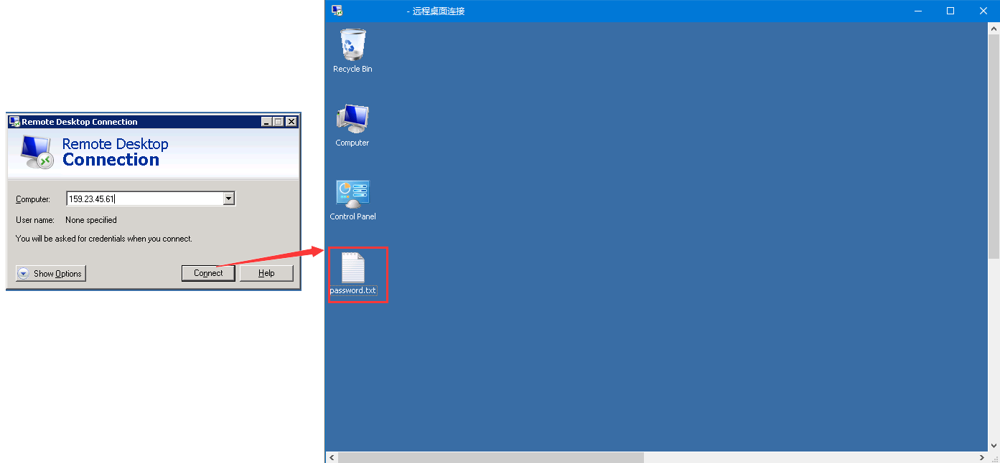
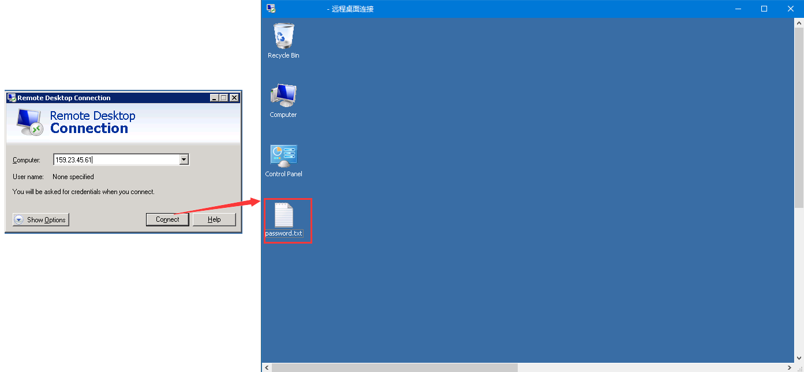

{{ $t('message.solution_selection1') }} {{ $t('message.breadcrumbs_ftp') }}
{{ $t('message.ftp_content_linux') }}
{{ $t('message.ftp_forgetpw') }}{{ $t('message.solution_selection2') }} {{ $t('message.breadcrumbs_ftp') }}

{{ $t('message.ftp_getpwbycommand') }}
{{ $t('message.breadcrumbs_ftp') }}
{{ $t('message.ftp_content_windows') }}
{{ $t('message.ftp_forgetpw') }} 
